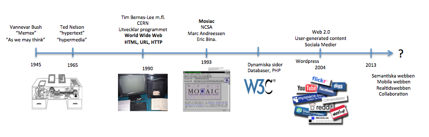
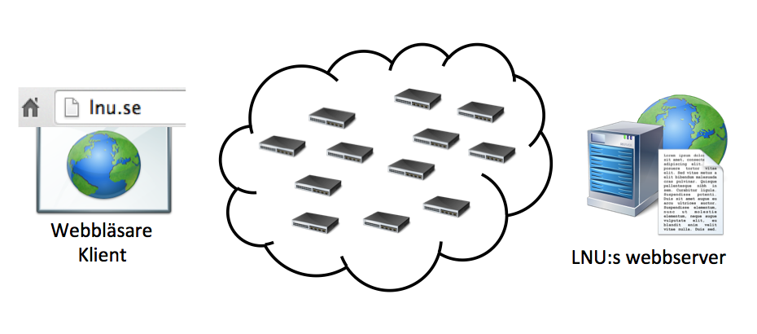
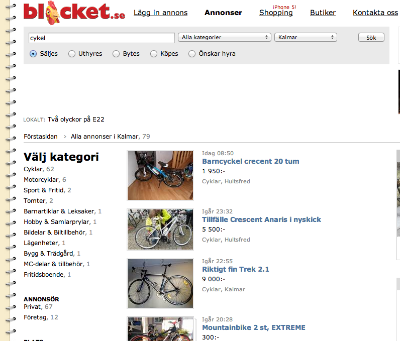
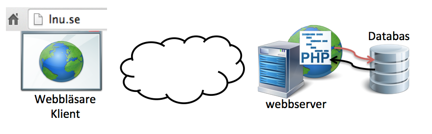

Web Management, 1IK424
Linnéuniversitetet, VT2014
Kursintroduktion

John Häggerud

- Universitetsadjunkt i datavetenskap
- Kursansvarig, föreläsare, laborationshandledare, examinator
- Skype: john-hik, E-post: john.haggerud@lnu.se
Emil Carlsson
- Webbprogrammerare
- Laborationshandledare
- Gillar PHP och reguljära uttryck
- Skype: emil.lnu, E-post: ec222ba@student.lnu.se
Kursens mål!
- Få förståelse för hur en dynamisk webbapplikation är uppbyggd och fungerar
- Få kännedom om serverscriptspråket PHP och hur det kan användas
-
Få kännedom om att skapa en dynamisk webbapplikation med hjälp av publiceringssystemet Wordpress
Kursens uppdelning
Delkurs 1 - PHP (3 hp)
Betyg: U/G - Noteringar görs om antal lösta extrauppgifter som kan komma att påverka slutbetyget i kursen
Delkurs 2 - Wordpress (2 hp)
Betyg: U/G - Noteringar görs om antal lösta extrauppgifter som kan komma att påverka slutbetyget i kursen
Delkurs 3 - Projektarbete (2.5 hp)
Betyg: U/3/4/5 - Görs gruppvis
Projektdelen
Projektet i år
Öppen data
Vad som förväntas av dig
Att du går kursen för att du vill lära dig!
Kunskap om HTML + CSS
20 timmar i veckan
Självstudier
FRÅGOR???
Webbens utveckling

Inspirationen till webben skapades redan 1945. Det var precis efter andra världskriget
och forskaren Vannevar Bush beskrev vad han kallade Memex i sin skrift "As we may think".
Memex för ett förslag på en maskin där man kunde spara all sin information
(böcker, kommunikation, brev o.s.v.) och låta
"maskinen" hålla reda på detta och göra det presenterbart för användaren via
Denna skrift inspirerade många forskare i "computer science", bland annat gav denna maskin
inspiration till skapandet av den första datormusen. Men även idén med "hypertext"
och "hypermedia"
En som använde detta var Ted Nelson som först myntade uttrycket.
Mycket handlade om dokumenthantering och hur man skulle organisera detta.
Ted Nelsons forskning inspirerade i stor grad Tim Bernes-Lee som ses som
fadern till utvecklingen av den moderna webben med HTML som uppmärkning
av information.
Själv tycker han dock inte att webben i form av HTML
"HTML is precisely what we were trying to PREVENT— ever-breaking links,
links going outward only, quotes you can't follow to their origins,
no version management, no rights management"
http://xanadu.com.au/ted/TN/WRITINGS/TCOMPARADIGM/tedCompOneLiners.html
Tim Bernes-Lee jobbade på CERN med informationshantering och skrev
artiklen Information management: A proposal
"A web of nodes where user can browse at will"
Tim försökte sprida sina idéer bland cheferna i CERN men fick som
svar "interesting, but vague
1990 - Utvecklar en applikation World Wide Web
De tre grundbultarna i detta är URL/URI, HTML, HTTP.
Det har funnit flera olika varianter som hade kunnat bli "webben".
En av de största vid denna tiden var Gopher, ett list/menybaserat system med länkar till
olika typer av dokument. Gopher togs fram och drevs av University of Minnesota men 1993
bestämde man att ta ut en licenskostnad för användadet. Detta ledde i sin tur till att
Tim Barnes-Lee:s WWW blev bra mycket populärare då det var helt gratis och släppt med
öppen källkod"
Senare 1993 släpptes den första riktigt populära grafiska webbläsaren "Mosaic".
Detta gjorde att även allmänheten såg en större nytta med webben och fick fart på
utvecklingen.
Mosiacutvecklarna anställdes av Netscape och utvecklade där Netscape Navigator
Den webbläsare som hade störts inflytande när webben var ung. Samtidigt började
andra webbläsartillverkare röra på sig och början till det "browser war" vi känner
till startade. W3C skapades för att hålla koll på standarderna och jobba för
ett bättre helhetsgrepp på hur webben skulle fungera
Webben hade främst beståt av statiska html-sidor som länkade mellan varandra
men tekniker som kunde göra webben mer dynamiskt växte fram. Stöd för datalagraing i databaser
och tätare integration mellan webb och företagens övriga system.
Web 2.0 innebar en mer användergenererad webb. Utvecklingen skedde på gräsrotsnivå
och många nya tekniker (programmerinsgspråk, ramverk, tekniska lösningar) togs fram och
drev webben ytterligare vidare. Många av de idag självklara tjänster skapades och gav
webben en starkare plats i människornas liv. Information utbyts och diskuteras på
bloggar, tweets m.m.
2007 släppte den första iPhonen och trots att det funnits surfmöjligheter
på handhållna enheter var det ändå starten för smartphones och den mobila webben.
Android följde och mängder av telefoner och tekniker som responsive design
följde. Man börjar samtidigt få flera typer av enheter, TV-apparater där man
försöker använda en plattform och får en webb att fungera överallt.
Framtiden är alltid svår att sia om. Något som pratas om i forskarvärden
är begrepp som Semantic Web och Linked Data. Semantiska webben är egentligen
ett gammalt uttryck...kanske till och med utopi. Tanken är att man vill göra
webben och all dess information tillgänglig för applikationer på ett bättre sätt.
Webben består av klienter och servrar
Kommunikation sker via anrop (request) och svar (response)

HTML, CSS och JavaScript
- HTML används för att märka upp och strukturera information
- CSS används för presentation av informationen
- JavaScript används för interaktion
Alla dessa tekniker hanteras av webbläsaren.
De kallas för klientbaserade tekniker
En utvecklare som är specialiserad kring dessa tekniker
brukar kallas "frontend-utvecklare"
Begränsningar klientbaserade tekniker
- Det går inte spara information över tid!
- När någon besöker sidan ser de inte vad andra skrivit
- Svårt att implementera smartare funktionallitet så som t.ex. sökning
- Vi har flera sidor med en meny, vi måste manuellt skriva menyn för varje sida
- Vi kan inte skicka e-post via kontaktformulär
- ...
Hur fungerar merparten av världens webbplatser?

- Vem skriver all HTML, CSS och javascript för att visa denna lista?
- Finns det en sida för VARJE tänkbart sökord?
- Vart sparas informationen?
Dynamisk webbapplikation
Dynamisk webbapplikation
För att lösa detta behöver vi en webbserver, ett serverscriptspråk (t.ex. PHP)
och en databas där informationen kan lagras.

Webbserver
- Ett program som lyssnar efter anrop och ansvarar för att skicka tillbaka webbsidor
Databas
- Ett program vars uppgift är att spara data/information
- Man ska kunna strukturera upp data, för snabb tillgång
- De flesta dynamiska webbapplikationer har någon form av databas i botten
- Vi kommer inte jobba direkt med databaser, men bör veta att dessa finns!
- I laboration 1 får ni en databas (filbaserad), i Wordpress finns en databas (mySQL)
Dynamisk webbapplikation
För att lösa detta behöver vi en webbserver, ett serverscriptspråk (t.ex. PHP)
och en databas där informationen kan lagras.
En dynamisk webbapplikation behöver kommunicera med databasen...
Till detta behöver man ett programmeringsspråk, ett server-scriptspråk!
I denna kurs ska vi arbeta med språket PHP!

PHP:s uppgift
- Hämta data från databasen
- Spara data i databasen
- Skapa (rendera) HTML på ett mer dynamiskt och smartare sätt
Kom ihåg!
- För att kunna använda PHP behöver du en webbserver
- En webbläsare förstår inte PHP, bara HTML, CSS och JavaScript
Hello World!
Vad: Vårt första PHP-exempel!
Problem: Låt ditt PHP-script skapa en HTML-sida som skriver ut "Hello World!"
Varför: Förståelse för PHPs uppgift av att rendera HTML och hur HTML och PHP-kod blandas. Se hur man kan använda cloud9 för PHP-kod.
- Kursens första del handlar om enklare PHP-programmering.
- Ni ska alltså få förståelse och kunskap kring att skapa dynamiska webbapplikationer
- Kursens andra del handlar om WordPress
- Med hjälp av Wordpress kan man skapa större dynamiska webbplatser
- Wordpress är skrivet i PHP och med kunskap i PHP kan man "enkelt" utveckla mer avancerade webbplatser
Vad du ska veta efter denna föreläsning
- Skillnaden mellan en statisk och en dynamisk webbapplikation
- HTML, CSS och JavaScript hanteras av webbläsaren
- Serverskriptspråk (PHP) hanteras av en webbserver
- Vad används en databas till i en webbapplikation
- Vad har serverscriptkod för roll i en dynamisk webbapplikation?
- Hur du får ett enkelt PHP-script att rendera ut en HTML
Nästa föreläsning: PHP-programmering
 Detta verk är licensierat under en
Creative Commons Erkännande-IckeKommersiell-DelaLika 3.0 Unported Licens.
Detta verk är licensierat under en
Creative Commons Erkännande-IckeKommersiell-DelaLika 3.0 Unported Licens.